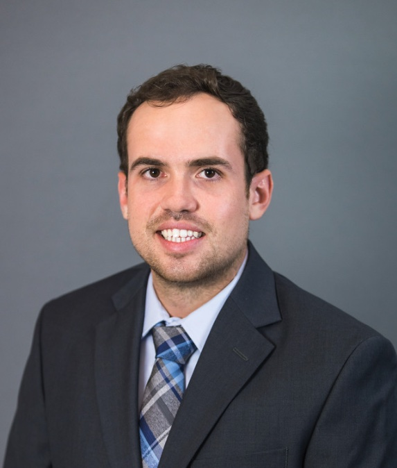

Propofol and hypertriglyceridemia in the ICU
Systematic review and meta-analysis of recent observational data. Presented at the Southeastern Surgical Congress, New Orleans 2025.
Read paper →Hi, I'm Logan.
I'm a cardiac hospitalist at the only dedicated heart hospital in South Carolina, a clinical researcher, and a medical educator, working toward a career in interventional cardiology.

About
I started out as an engineer. After earning a degree in Biological Systems Engineering from Auburn University, I worked as a process engineer and team lead, managing production, people, and processes on a manufacturing floor. That background still shapes how I practice, with an emphasis on systems thinking, procedural precision, and evidence-based reasoning.
I earned my Doctor of Osteopathic Medicine from the Alabama College of Osteopathic Medicine and completed my Internal Medicine residency at Prisma Health / University of South Carolina School of Medicine in Columbia. Along the way I found my focus: cardiovascular medicine, and long term, interventional cardiology, including coronary intervention, complex lesion management, and structural heart disease.
Today I care for cardiac patients as a hospitalist at Prisma Health's Heart Hospital, working side by side with our cardiology consult service. Outside of patient care, I do clinical research, teach medical students, and help other trainees get started with research.
My engineering side never went away. I use AI to build tools I wish I'd had in training: procedure simulators, 3D anatomy, and research platforms that put a large body of evidence in one place.
Experience
Prisma Health / USC School of Medicine
Alabama College of Osteopathic Medicine
Fourth-year rotations in interventional cardiology, electrophysiology, preventive cardiology, and a consultative cardiology elective at Duke University.
Auburn University
Prisma Health Heart Hospital · Columbia, SC
Managing a broad range of cardiovascular disease alongside the cardiology consult service, including acute coronary syndromes, heart failure, arrhythmia, and procedural cardiology.
Prisma Health / USC School of Medicine · Columbia, SC
Training across general medicine, cardiology, critical care, pulmonology, nephrology, POCUS, and outpatient medicine. Research Committee Chair, Cardiology Interest Group founder, and SC ACP Resident Council member.
Physeo USMLE Review
Wrote clinical vignette questions and explanations for USMLE Step 2, and contributed chapters to three review textbooks.
Specialty Piping Products
Ran production scheduling and inventory for the company's largest customer, supervised welding crews, helped launch the facility's first robotic welder, and later rebuilt the company's marketing and website.
Research and scholarship
My research centers on cardiovascular disease, especially heart failure and hypertrophic cardiomyopathy, along with critical care and interesting clinical cases.
Systematic review and meta-analysis of recent observational data. Presented at the Southeastern Surgical Congress, New Orleans 2025.
Read paper →Systematic review and meta-analysis. Also presented at the Heart Failure Society of America, Atlanta 2024.
Read paper →Case report and review of the literature. Presented at the Southeastern Trauma Symposium, 2024.
Read paper →Presented at SCCM Critical Care Congress, Southern Medical Association, and Prisma Health IM Grand Rounds.
Read abstract →A nationwide analysis of cardiovascular risk in younger adults who use cannabis.
Read paper →Thromboembolic risk in acute cardioversion of SVT. Presented at USC Discover Day 2024.
Read paper →Projects and leadership
Founded a group within the Prisma Health IM residency to help aspiring cardiologists with networking, research, and preparing for the fellowship match.
Led efforts to encourage and support scholarly work across the internal medicine residency.
Give a quarterly "Intro to Research" lecture to third-year students and a yearly clinical cardiology lecture to second-years, and mentor students starting research.
Helped run a statewide yearly ultrasound event with lectures and friendly competition between medical students and residents.
Started the school's American Medical Association chapter. Also served on the AOA's governance committee (CAGOS) and as a state advocacy delegate.
Led a 33-person team coordinating 500+ job sites for one of the largest student-run service projects in the country.
Auburn senior design project: a system to improve energy and water efficiency at Yarbrough Elementary while teaching students about sustainability and STEM.
Designed and built the company's website and a multimedia portfolio of its products and capabilities.
AI and software
I pair my clinical knowledge with AI coding tools to build simulators, anatomy models, and research platforms. I work out the clinical requirements, check the medicine, and make the design decisions; AI speeds up the engineering.
This model comes from my cardiac anatomy project. It's built from NIH Visible Human segmentation data, not drawn by hand, so the chambers, valves, and great vessels match real anatomy. I use it to teach medical students.
Drag to rotate · scroll or pinch to zoom
Anatomy source: NIH Human Reference Atlas, Visible Human Male (CC BY 4.0).
A browser-based cardiac cath trainer for residents and early fellows. It uses 3D catheter physics and simulated fluoroscopy, so engaging the coronaries works like it does in a real case. It also includes hidden-pathology cases.
An echo trainer built from real CT anatomy, with ultrasound physics, acoustic windows, and heart motion. It follows standard cardiology display conventions and is meant for trainees I teach.
A reference covering 15,000+ diseases, built from Open Targets genetics and drug data plus comorbidity tables. It includes AI-generated explanations of each disease.
A drug-repurposing engine that combines independent lines of evidence and tests itself against known drug–disease pairs before trusting its own rankings.
A personal evidence library that combines my notes with PubMed literature. It uses hybrid search, and every AI answer it gives must cite its sources.
What's next
Working as a cardiac hospitalist at the Heart Hospital, building hands-on experience with complex cardiac patients alongside the cardiology team.
Two LVAD outcome studies on pre-implant prealbumin and bilirubin and one-year survival, a national cohort study of Takotsubo cardiomyopathy in septic shock, and a case report on Cutibacterium avidum pericarditis.
Applying to cardiovascular disease fellowship programs, with the long-term goal of interventional cardiology: coronary intervention, complex lesions, and structural heart disease.
Continuing to teach and mentor, and turning my simulators into tools other trainees can use.
Contact
Whether it's research collaboration, fellowship programs, or teaching, I'd like to hear from you.